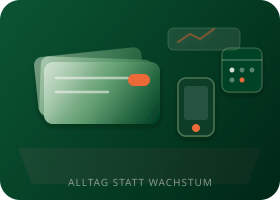
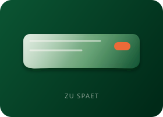
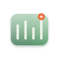

Vor dem Termin
Was wir bauen, woran Sie den Engpass erkennen, wie ein Fall aussieht.
Für Makler, Berater und Agenturen

Was wir bauen, woran Sie den Engpass erkennen, wie ein Fall aussieht.
Ihr Engpass in 20 Minuten. Ein konkreter nächster Schritt.
Was geht, was nicht, was Sinn macht.
Wir nehmen Ihnen das ab — ohne ein weiteres Projekt, das Sie selbst durchziehen müssen.

Von wo bis wohin. Was das System übernimmt — und wo Sie entscheiden.


Live im Alltag
Anfrage-System live: Qualifizierung und Terminübergabe an das Team. Läuft im Alltag.
Fünf Schritte vom ersten Termin bis zum laufenden System. Reihenfolge, kein Menü.
Bei Bedarf kommen wir zu Ihnen und handeln eine Garantie aus — passend zu dem System, das Ihren Engpass löst. Jede Problemlösung braucht eine eigene, passende Zusage. Festgehalten werden messbare Kennzahlen vor dem Start.
Bleibt in den ersten zwei Monaten nach Go-Live der Mehrwert nach diesen Kennzahlen aus oder nicht messbar, bekommen Sie Ihre Monatsbeiträge zurück.
20 Minuten. Ein Engpass. Prozess-Sparring: was geht, was nicht, was Sinn macht.
Sie geben Ihre Angaben direkt im Kalender ein. Ein zweites Formular gibt es nicht.
20 Minuten, kostenlos.
Kevin Ritz · Audit · kein Verkaufsdruck
20 Minuten, kostenlos. Sie geben Ihre Angaben direkt im Kalender ein, ein zweites Formular gibt es nicht.